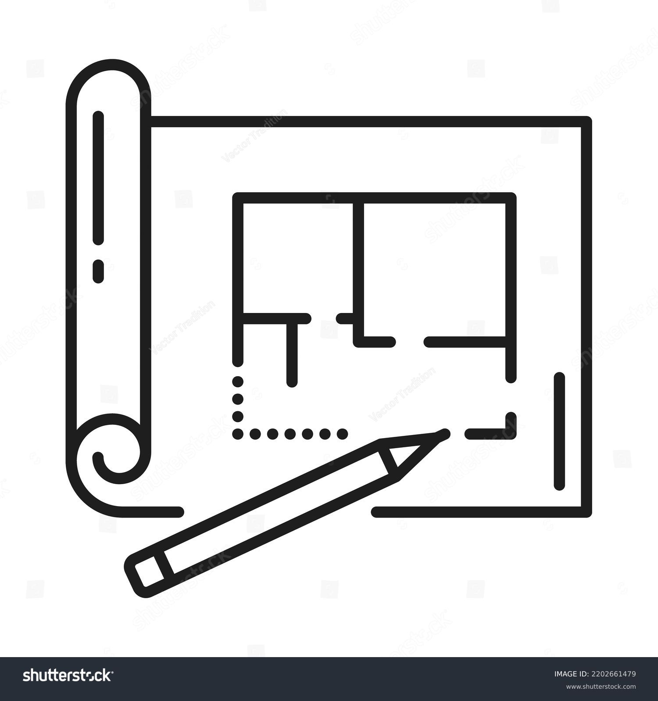

Énoncé du projet
Explication détaillée de l'énoncé du projet, de la méthodologie et des objectifs
Learn More
(Projet en robotique et apprentissage automatique)
Ce projet vise à développer un modèle de performance pour les algorithmes SLAM (Localisation et Cartographie Simultanées) en robotique autonome.
Dans un système de robotique autonome, il est crucial de fonctionner dans des environnements complexes et dynamiques. Un robot autonome doit être capable de prendre des décisions critiques dans des situations difficiles et ambiguës.
Sous la supervision du Dr. Samer Nashed et du Professeur Liam Paull au laboratoire REAL, ce projet vise à développer un modèle de performance pour les algorithmes SLAM. L'objectif est de permettre au robot d'évaluer plus précisément ses capacités de perception et de prise de décision en fonction de l'environnement et de le faire en temps réel et sans informations à priori sur l'environnement.
Explication détaillée de l'énoncé du projet, de la méthodologie et des objectifs
Learn More